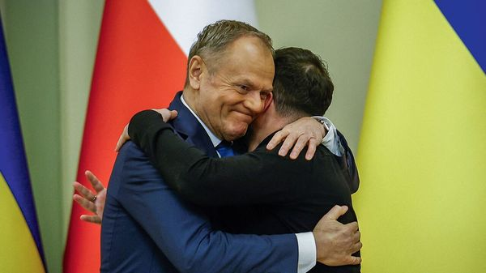

Jul 09, 2026 06:29 AM | Kyiv

ON JULY 11th Poland commemorates the Volhynia massacres, in which some 100,000 Polish civilians were killed by Ukrainian nationalists in 1943 in what is now western Ukraine. The day used to be an occasion for dialogue. Polish and Ukrainian leaders together honoured the victims of the killings and of reprisals by Polish partisans. Local officials and priests organised vigils on both sides of the border.
Not this year. Poland and Ukraine, long close allies, are entangled in a fight over Volhynia’s legacy. A Polish minister has warned that his country may block Ukraine’s accession to the European Union. And Poland has reneged on a deal to give Ukraine MIG-29 fighters, citing its unwillingness to share drone technology. Donald Tusk, Poland’s prime minister, has suggested he may withhold aid. The squabble threatens lasting damage to one of Europe’s most crucial partnerships.
The latest dispute began in late May, after Ukraine’s president, Volodymyr Zelensky, named a special-forces unit after the Ukrainian Insurgent Army (UPA), which during the second world war fought the Soviets and the Nazis (though it occasionally co-operated with the latter). Ukrainians celebrate the insurgents as a symbol of resistance against Moscow. Poles revile them for the massacres, which Poland officially considers a genocide.
The provocation may have been unintentional. The request to rename the unit came from its officers, not from Mr Zelensky. It appears to have inadvertently bypassed diplomatic review. Ukraine had unveiled monuments to UPA commanders in the past, drawing pro forma protests from Poland. But this time Karol Nawrocki, Poland’s right-wing populist president, decided to escalate. On June 19th he stripped Mr Zelensky of Poland’s highest state honour, awarded in 2023. Mr Zelensky was initially taken aback. But he leaned into the fight, sending his medal back by commercial mail rather than diplomatic courier.
The two countries’ nationalist politics then made it hard to untangle the dispute. Three former Ukrainian presidents renounced their own Polish honours. Mr Zelensky doubled down, unveiling plans for a National Pantheon that will showcase Ukraine’s historical great and good. “No one will ever dictate...which heroes we should honour,” he growled. Some officials on both sides, notably the countries’ foreign ministers, have tried to lower the temperature, but without success. The hard-right opposition in Warsaw hopes to use the July 11th commemorations to whip up new anger against Ukraine.
At the start of Russia’s invasion in 2022, the friendship between Poland and Ukraine reached new heights. Western weapons poured into Ukraine through Poland, while millions of Ukrainian refugees crossed the other way. But many Poles gradually lost enthusiasm. Farmers resented Ukraine’s tariff-free grain exports to the European Union. Poles grumbled that Ukrainians were crowding schools and driving up rents. Such divisions were exploited by Russian influence campaigns and by Poland’s own nationalist opposition.
The dispute over the UPA threatens to poison relations for the foreseeable future. Mr Nawrocki may table a bill that would criminalise “glorifying” the UPA. Ukraine’s parliament, meanwhile, is weighing a law to combat “Ukrainophobia”, which could ban criticising the UPA. Unless cooler heads prevail, says Bartosz Cichocki, a former Polish ambassador to Ukraine, “Poland’s support for Ukraine’s EU accession, military assistance and even economic co-operation” may be at stake.
That would have grave implications for Europe. Cracks in solidarity with Ukraine would embolden Russia. The end of military co-operation with Poland would undermine Ukraine’s war effort. A setback to Ukraine’s EU membership bid would hand Russia another reason to celebrate.
Much of the problem is political. Mr Nawrocki is backed by Poland’s populist-right opposition Law and Justice (PiS) party, and is wooing far-right voters ahead of parliamentary elections next year. For him and for PiS, the dispute is “political gold”, says Renata Mienkowska-Norkiene, a political scientist. Mr Tusk and the other members of Poland’s governing alliance, she says, are simply trying to keep pace.
For Mr Zelensky, the turn towards nationalist grandstanding is a departure. He previously joined in commemorating the victims of the Volhynia massacres. Last year his government approved allowing Polish researchers and civic groups to exhume victims’ bodies, a long-standing Polish demand. That conciliatory diplomatic attitude is sorely needed now, on both sides. Instead the two countries are allowing historical squabbles to inflict severe damage on their relationship, to the detriment of Europe and themselves, and to the benefit of Russia.■
To stay on top of the biggest European stories, sign up to Café Europa, our weekly subscriber-only newsletter.